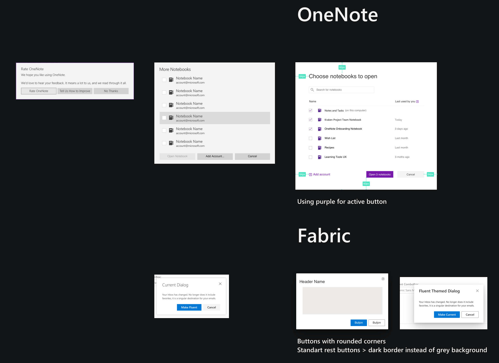
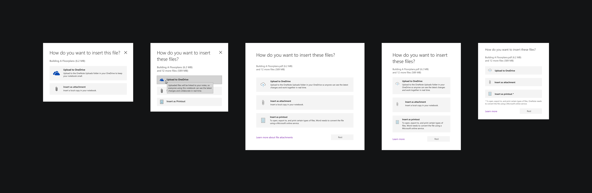
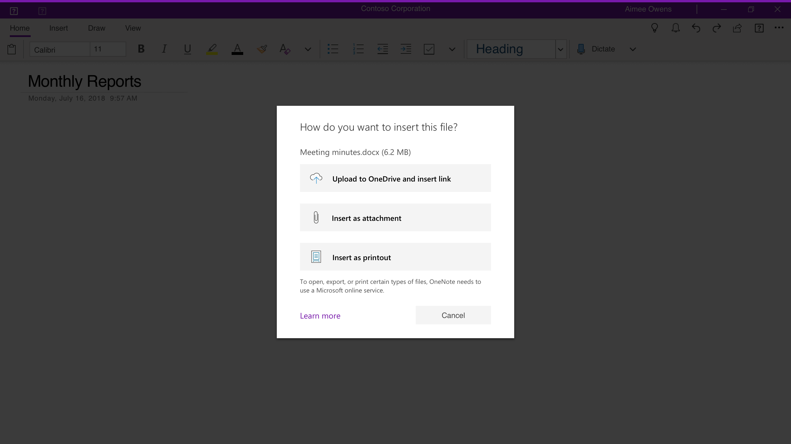
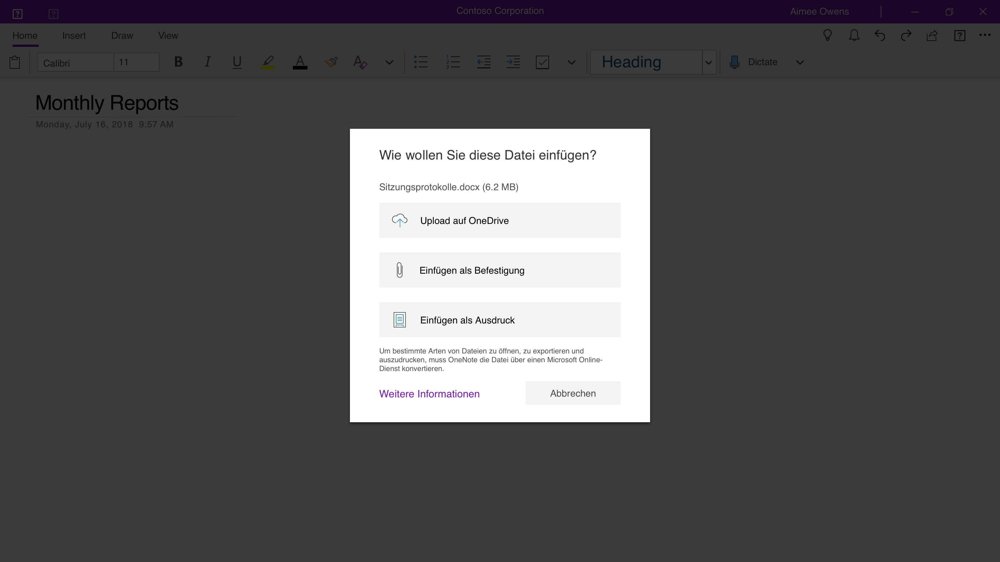
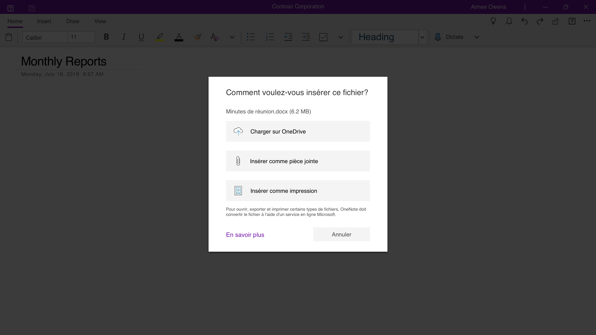
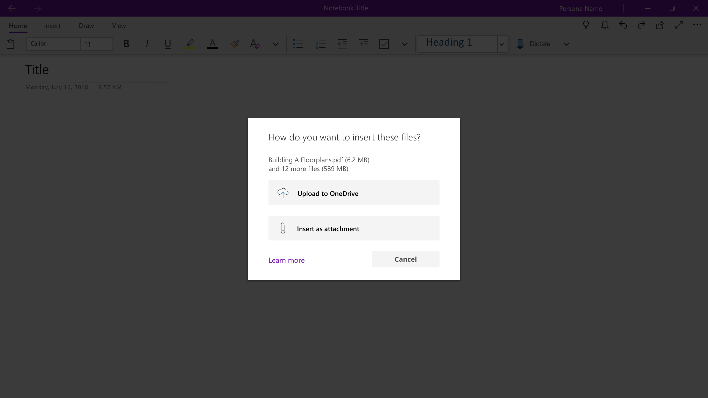
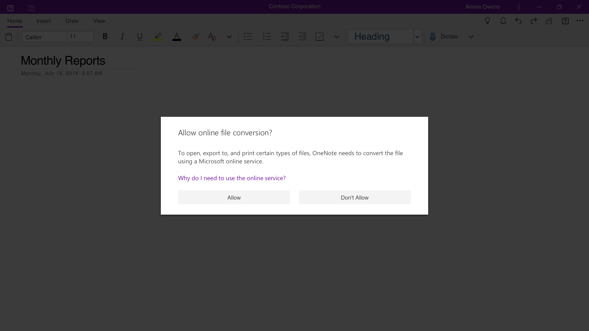
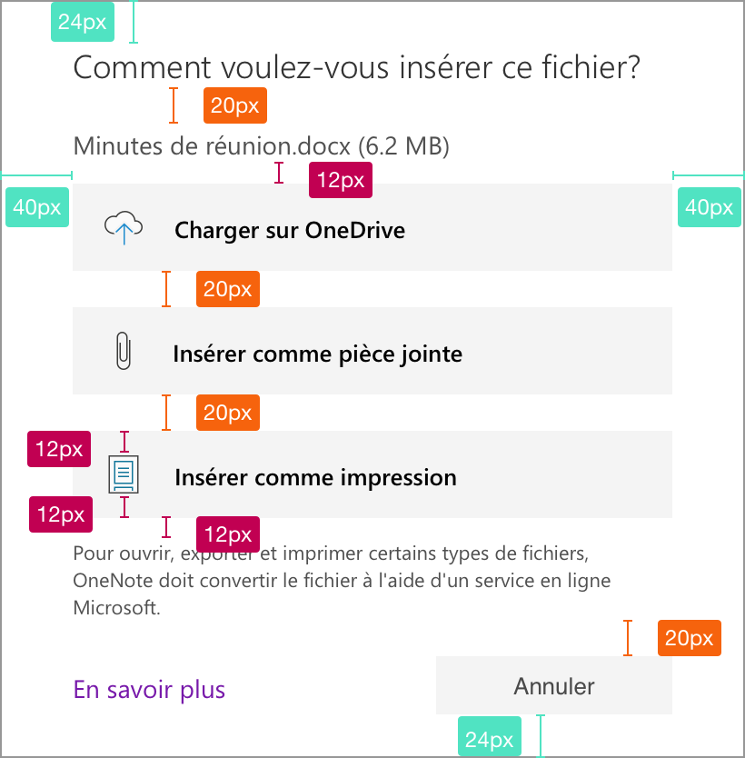
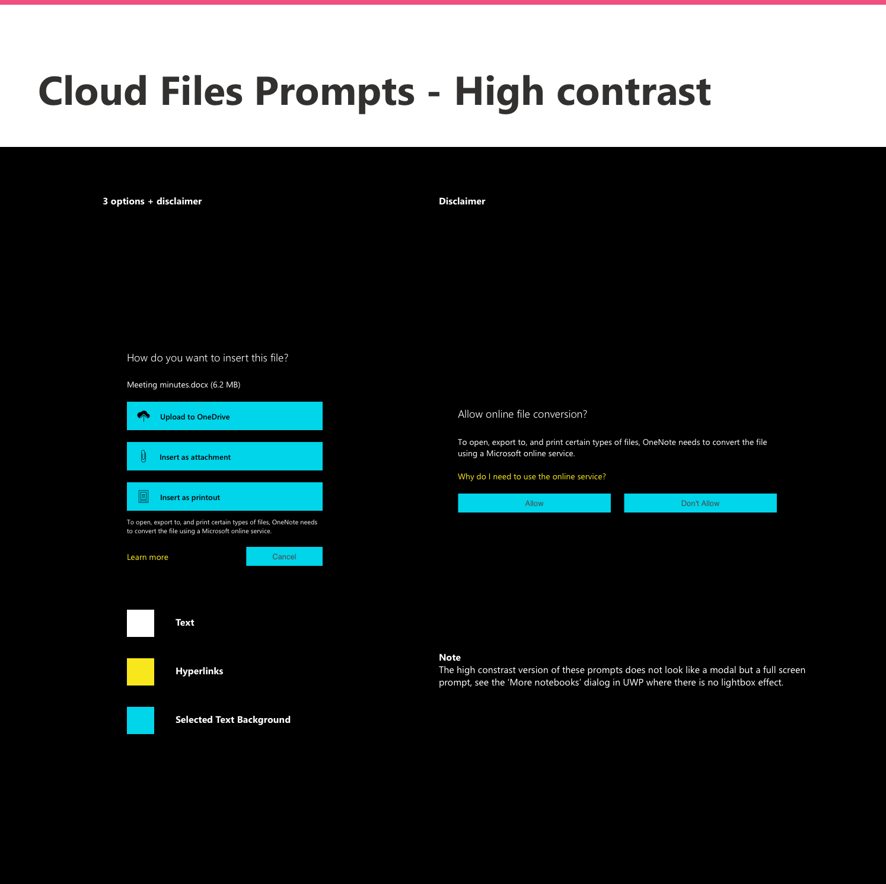
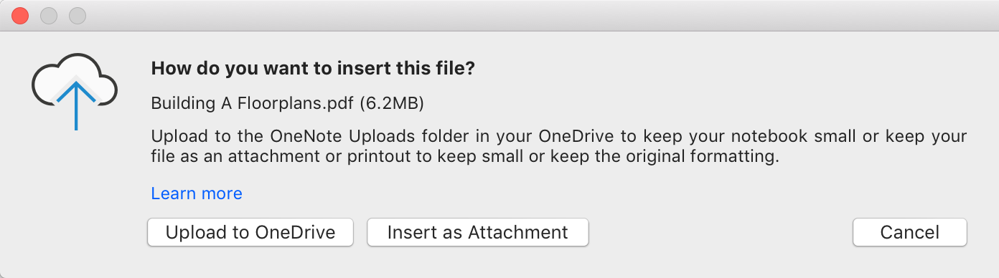

I was brought on a team with a project manager and three engineers to add the capacity to insert the cloud attachments function to a notebook page in OneNote UWP (Universal Windows Platform) and Mac. This feature already existed in OneNote 2016 and was highly sought by OneNote users. Storing your file attachments in the cloud instead of your notebook keeps your notes more manageable and lets you collaborate with others more easily.
A previous crew had achieved the function of uploading attachments to OneDrive and this new crew formed to enable users to decide how to attach the files they want to insert in their notebook page.
I collected examples of similar types of modal within OneNote's different platforms and throughout Microsoft user interface components libraries.
Modal visual collection for files insertion prompt

I started by analyzing how this file insertion prompt is done on other Microsoft products such as Microsoft Outlook and Microsoft Word on their desktop versions as well as their Online versions.
After analyzing how this type of upload is done throughout Microsoft products, I mapped the different use cases based on the type of file selected by the user.
I followed the Office standard of a modal that appears right after the user selects a file to insert. Based on the user's file type, the modal displays either two or three options to pick from.
○ When a user chooses to insert a PDF document into their notes, OneNote would display a modal that allows to “Upload to OneDrive and insert link", "Insert as attachment" or "Insert as printout".
○ When a user chooses to insert a Microsoft Office Word, Excel or PowerPoint document into their notes, OneNote would display a modal that allows to “Upload to OneDrive and insert link", "Insert as attachment" or "Insert as printout" with a disclaimer that inserting as a printout will use an online Microsoft service.
○ When a user chooses to insert another type of file into their notes, OneNote would display a modal that allows to “Upload to OneDrive and insert link" or "Insert as attachment".
○ When a user chooses to insert a mix of files into their notes, OneNote would display a modal that allows to “Upload to OneDrive and insert link" or "Insert as attachment".
I explored different options for the file insertion prompts that would follow the Microsoft design standards as well as allow to add a disclaimer under the printout option.
Files insertion prompt design explorations
I tested the final design by localizing the prompts into German and French to test string lengths.
Files insertion prompt final visual design
    Redlines specifications for files insertion prompt

I created the redlines, assets and the accessibility and high contrast specifications to share with the engineers for implementation.
High contrast specifications for files insertion prompt
Mac version of the files insertion prompt
{kind=link}
{kind=link}
{kind=link}
{kind=link}
{kind=link}
{kind=link}
{kind=link}
{kind=link}
{kind=link}
{kind=link}